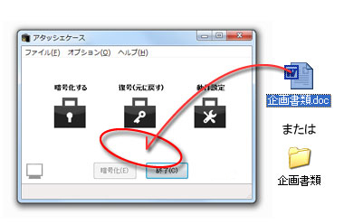
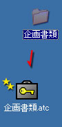

使い方はいたって簡単です。アイコン、または開いたウィンドウ上に、暗号化したいファイルをドラッグ＆ドロップするだけです。
暗号化される前に、パスワード入力を求められますので、設定してください。
また、フォルダごと、アタッシェケースへドラッグ＆ドロップすることで、１つに圧縮＆パックして暗号化ファイルを作ることもできます。

Created with the Personal Edition of HelpNDoc: iPhone web sites made easy